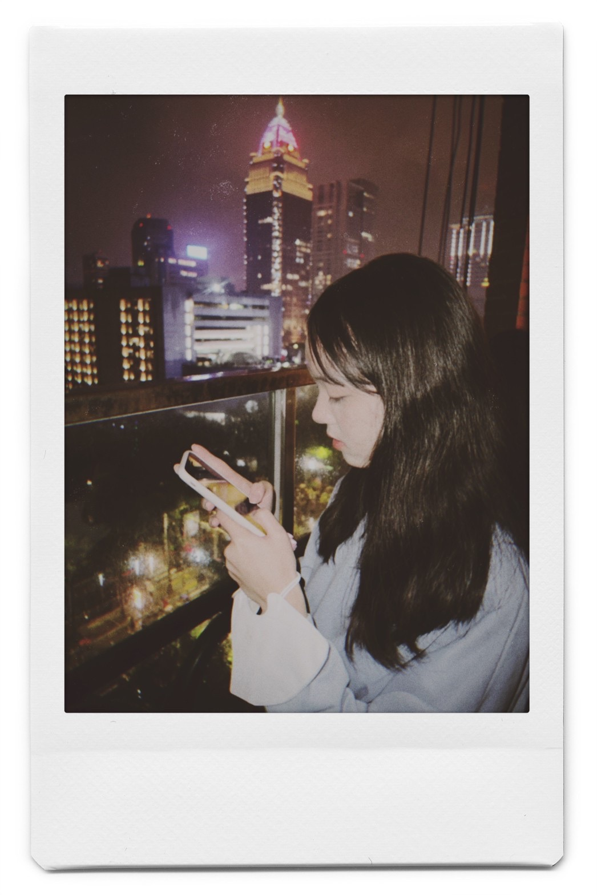
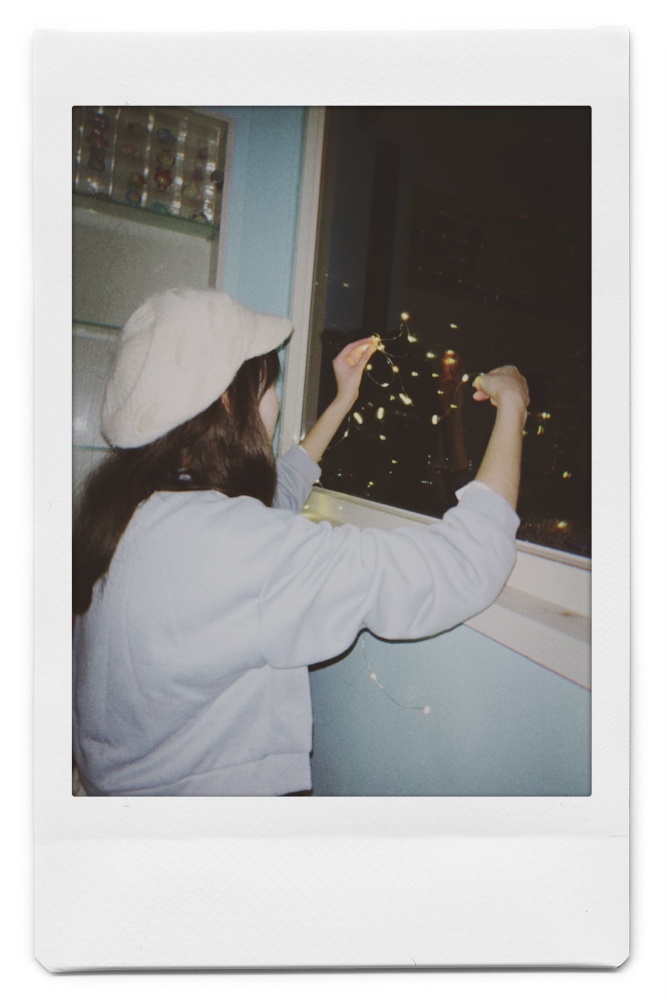
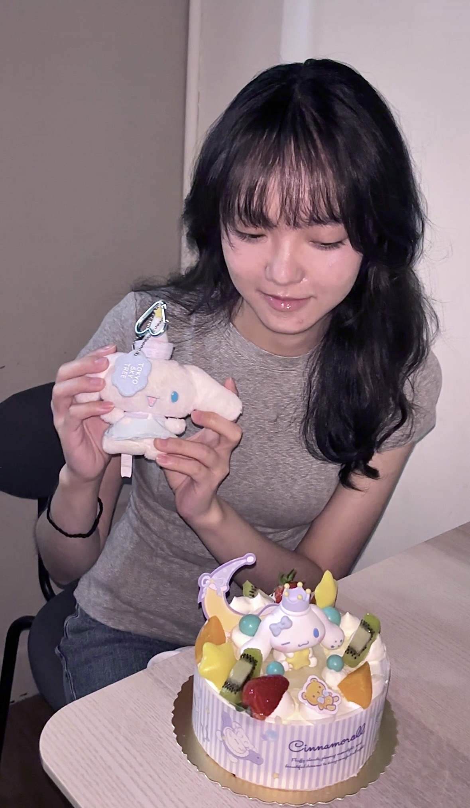

個人照片集







暱稱：Dorothy ／ 學號與姓名：111416031 許沛甄（國立台北教育大學 資訊科學系 二年級）
興趣：看劇、聽音樂、彈吉他、彈鋼琴
希望透過文字與影音的結合，把日常喜歡的事物整理成一個專屬的小天地。
| 韓劇推薦 | 吉他指彈（音樂分享） |
|---|---|
1.《浪漫醫生金師傅》劇情摘要：講述在偏遠的石垣醫院裡，怪才醫生金師傅與充滿熱情的年輕醫生們，在面對各種緊急醫療與現實考驗時，堅守救人初衷並找尋人生價值的故事。 觀劇心得：每次在人生感到迷惘或對未來不安時，重溫金師傅的話總能獲得滿滿的勇氣，提醒自己不要盲目追隨別人的腳步，而是專注於真正熱愛的事物。 經典台詞： 「你不必非得變得跟誰一樣，只要活出自己的樣子就好，在這個年代，努力未必就能得到回報，競爭的激烈程度難以言喻，你們的出路也越來越窄，但這世上無論何處，都不會有你在找的標準答案，你要找的不是答案，而是你想做的事，懂嗎？找到你真心喜歡，又能做得開心的事，那件事，就會是你的答案。」 2.《請回答1994》劇情摘要：以 1994 年首爾新村合宿屋為背景，描寫來自韓國各地的大學生們在異鄉共同生活，一起經歷青春、友情、初戀與時代變遷的溫暖故事。 觀劇心得：合宿屋裡大家吵吵鬧鬧卻又彼此關心的日常非常真實動人，讓人深刻體會到身邊的陪伴與當下的每一刻才是最值得珍惜的寶物。 經典台詞： 「Present 這個英文單詞有兩個意思『禮物』和『現在』，說不定對我們來說，最珍貴的禮物就是現在，正是我們眼前的這段時間。」 |
練習曲目清單
音樂風格：木吉他指彈（Fingerstyle）— 結合抒情旋律與節奏打板技巧 練習心得：從溫柔的《Like a star》到充滿力量的《Fight》與《Flaming》，每首曲子對左右手的協調性與節奏控制都是不同的挑戰。雖然練習敲板和高速換把位時手指常常很痠，但當整首曲子流暢彈出來時，真的非常有成就感！ 練習片段：音訊 / 視訊 |
透過這次個人網站的規劃，我了解到如何把自己的興趣、想法整理成一個清晰的版面。在作品區結合了圖片和音訊元素，希望能讓網站的呈現更加多元。
之後也會陸續更新更多好聽的鋼琴曲譜與私藏片單，敬請期待！